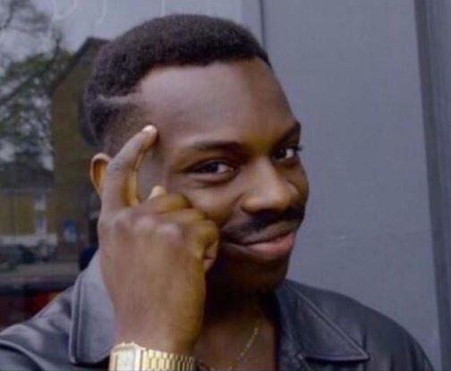

Pepe the Frog (Pepe la rana) es un personaje antropomorfo de la rana de la serie cómica Boy's Club de Matt Furie. En 4chan, varias ilustraciones de la rana se han utilizado como caras de reacción, incluyendo Feels good man, Sad Frog, Angry Pepe, Smug Frog y Well Meme'd.
Enlace!!!

Roll Safe es una imagen macro que contiene una captura del actor Kayode Ewumi sonriendo y apuntando a su temple mientras representando al personaje Reece Simpson (a.k.a. "Roll Safe") en la serie web Hood Documentary. La imagen es usualmente acompañada con varias bromas burlandoce de malas decisiones y el fallar en el pensamiento critico.